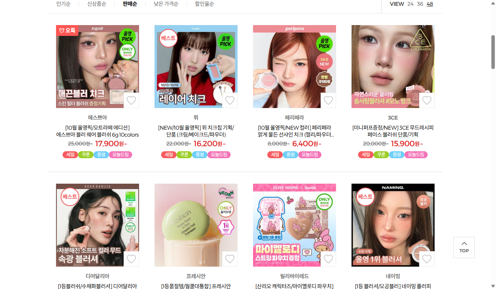

판매순 1번째 · 5928개 리뷰 · 4.7/5
에스쁘아 블러 웨어 블러쉬
확인한 것 오트라떼 연출과 볼 발색·제형을 연결. 신규 두 컬러를 먼저 보여주며 증정 필터의 전후 비교는 별도 구획.
TAM에 적용 연출의 팔레트와 실제 컬러를 연결한다. 증정품의 효과나 타사 모공 커버 주장은 가져오지 않는다.
올리브영 원문 ↗TAM BEAUTY · CLOUD BLUR · 2026.10.16
올리브영 판매순과 실제 상세 이미지에서 확인한 내용을, 탐뷰티의 문안·사진·순서에 연결한 제작 보드.
제작 방향
부드럽게 펴 발리는 크림과 보송한 볼 표현을 원본으로 연결하고, 라벤더 용기와 피치 컬러를 갖고 싶게 보여주는 연출을 보조한다.
“크림에서 보송함으로”라는 추상적인 문장과 반복되는 컬러 소개를 줄였다. 크림투파우더는 경쟁사에도 있는 제형이므로 독점 기술처럼 쓰지 않는다.
이 보드는 관찰 사실과 디자인 가설을 구분한다. 순위는 판매량 공개 자료가 아니며, 시안의 구매 전환 효과도 아직 검증되지 않았다.
01 · 직접 확인한 시장 정보
2026-10-16 10:02 KST · 메이크업 > 베이스메이크업 > 블러셔 · 판매순 (prdSort=03, 선택 상태 DOM 확인)
193개 상품 중 첫 페이지 표시 순서. 판매량·집계 기간은 확인되지 않음. 기획상품·복수 제형 합산, 할인·증정 영향을 분리할 수 없음.
현재 카테고리 열기 ↗
02 · 상세 이미지 검토
판매순 1번째 · 5928개 리뷰 · 4.7/5
확인한 것 오트라떼 연출과 볼 발색·제형을 연결. 신규 두 컬러를 먼저 보여주며 증정 필터의 전후 비교는 별도 구획.
TAM에 적용 연출의 팔레트와 실제 컬러를 연결한다. 증정품의 효과나 타사 모공 커버 주장은 가져오지 않는다.
올리브영 원문 ↗판매순 2번째 · 1526개 리뷰 · 4.8/5
확인한 것 파우더·크림·베이크드가 함께 판매되는 상품. 상세에서 matte / glow / sheer 마무리를 각각 구분하고 볼 근접 컷으로 보여줌.
TAM에 적용 TAM은 보송한 마무리에 집중한다. 크림이라는 이름만 보고 글로우 제품으로 오해하지 않게 실제 피부 표현을 함께 둔다.
올리브영 원문 ↗판매순 6번째 · 28495개 리뷰 · 4.8/5
확인한 것 크림과 파우더의 결합을 이미 소구. 펴 바르는 장면과 마무리 피부를 나란히 보여주고 유사 색상 비교와 톤별 발색 제공.
TAM에 적용 크림투파우더를 독점적 기술로 주장하지 않는다. 원본 영상으로 발림성을 보여주고 여섯 색의 실제 발색으로 선택을 돕는다.
올리브영 원문 ↗판매순 8번째 · 48752개 리뷰 · 4.8/5
확인한 것 색상마다 제형과 볼 발색을 붙여 배치. 톤 지도와 레이어링 안내 후 파우더 설명.
TAM에 적용 기존 두 열 발색 비교를 유지한다. 확인되지 않은 웜쿨 분류 대신 색의 차이를 짧고 구체적으로 쓴다.
올리브영 원문 ↗상세 원본 이미지 131개 조각을 내려받아 구성 흐름을 검토했다. 위 내용은 해당 화면의 관찰이며, 경쟁사 성능 주장을 검증하거나 TAM에 적용한 것이 아니다. 리뷰 수는 해당 기획상품에 합산된 표시 수다.
03 · HIGGSFIELD 촬영 기획
용기의 라벤더와 내용물의 피치를 기준으로 색을 잡고, 열린 팬·닫힌 로고를 함께 보여준다. 구름 장식·과일·파우더 폭발을 더하는 대신 매트한 면과 부드러운 곡선으로 촉감을 보조한다. 아래 생성 컷은 AI 연출 이미지다.

시안 메인에 적용
라벤더 용기와 피치 내용물의 대비, 열린 팬과 닫힌 로고를 동시에 보여 소장 욕구와 제품 인지를 연결.
곡면과 매트한 종이의 대비가 부드러움을 연상시킨다는 디자인 가설. 판매 효과는 미검증.
[SUBJECT] Use the supplied photographs as exact product references: TAM Beauty The Cloud Blur Cream Blush, shade 01 White Peach Shake. Preserve the round lavender compact, translucent hinged lid, the small lime cloud motifs, white curved product lettering and white central t logo. Preserve the coral-peach pan from the open reference. Do not redesign the packaging or change its scale proportions. This is a staged product photograph, not an application or efficacy comparison. [COMPOSITION] Portrait 4:5 studio still. Exactly two compacts of the same shade: one open, large and foremost at lower right, one closed at upper left, slightly behind, its printed lid facing the camera. The pair fills about 68 percent of image width. Camera looks down at 35 degrees, keeping the open pan fully visible. Both rest naturally on a single broad pale peach paper ribbon that curves once across the set. The ribbon is a smooth sculptural surface, not a bow, and its curve subtly echoes the round compact. Avoid blocking either label. Arrange the objects asymmetrically, with a small natural gap. [MATERIALS & TEXTURE] Uncoated matte paper ribbon over warm off-white seamless paper. Fine, barely visible paper tooth contrasts with the smooth translucent case. Soft directional shadows give the cases weight. No cosmetic smears in this variant. [LIGHTING] Large diffused key from 45 degrees camera-left, neutral 5200K, restrained white bounce from right, subtle negative fill outlining the lavender rim. Keep soft contact shadows and controlled highlights. The translucent lid must remain readable, no clipped white glare over the logo or pan. Background luminosity lower than the palest part of the packaging. [LENS & CAMERA] 85mm lens, f/8, deep product focus, crisp hinge and rim contours without edge halos. [COLOR PALETTE] Product-derived lavender, soft peach and off-white; no blue sky or dark grey. Preserve the product hue; mood comes from surroundings rather than recoloring the product. [STYLE REFERENCE] Geometric editorial staging, an unexpected but physically believable arrangement, tactile surface detail, restrained color blocking. Commercial product photography with an inviting beauty register. [BRAND INTEGRATION] Fresh, approachable and softly playful. Product remains the strongest visual element. [QUALITY MARKERS] Tack-sharp commercial photography, photorealistic material separation and convincing contact shadows. [AVOID] No AI artifacts, warped or smeared lettering, fake words, fake logos, melted geometry, doubled hinges, extra products, floating products, mirror lid, metallic packaging, waxy CGI finish, cartoon rendering, oversaturated HDR, halos, oversharpening, flat fluorescent light, harsh on-camera flash, watermarks or signatures. No random props, food, fruit, spilled loose powder, literal clouds, cotton wool, glitter, liquid droplets, added faces or hands. No artificial rectangular color bands. Preserve legitimate molded plastic packaging while avoiding an artificial rendered look. resolution: 2k
인쇄 변형으로 미채택
배경의 흐린 컬러 영역과 선명한 제품을 대비시켜 블러의 인상을 만든다.
블러 배경은 연출일 뿐 실제 모공 커버·피부 보정의 증거가 아니다.
[SUBJECT] Use the supplied photographs as exact product references: TAM Beauty The Cloud Blur Cream Blush, shade 01 White Peach Shake. Preserve the round lavender compact, translucent hinged lid, the small lime cloud motifs, white curved product lettering and white central t logo. Preserve the coral-peach pan from the open reference. Do not redesign the packaging or change its scale proportions. This is a staged product photograph, not an application or efficacy comparison. [COMPOSITION] Portrait 4:5 top-down still. Exactly two compacts of the same shade, open reference at lower left and closed reference at upper right, gently staggered on a warm off-white tabletop. Products fill about 70 percent of frame width and neither is cropped. Behind them a single large, deliberately out-of-focus peach circular light projection blends into the tabletop, suggesting softly diffused color. The circle is a photographic light pattern on the surface, not an additional object. Keep the product outlines sharply focused against this diffuse color field. One subtle lavender paper edge enters from the far corner, less than 8 percent of frame. [MATERIALS & TEXTURE] Matte seamless paper, fine controlled shadow beneath each case. No spills or texture swatches. Transparent lid remains see-through, exact packaging retained. [LIGHTING] Large diffused key from 45 degrees camera-left, neutral 5200K, restrained white bounce from right, subtle negative fill outlining the lavender rim. Keep soft contact shadows and controlled highlights. The translucent lid must remain readable, no clipped white glare over the logo or pan. Background luminosity lower than the palest part of the packaging. [LENS & CAMERA] 85mm lens, f/8, deep product focus, crisp hinge and rim contours without edge halos. [COLOR PALETTE] Product-derived lavender, soft peach and off-white; no blue sky or dark grey. Preserve the product hue; mood comes from surroundings rather than recoloring the product. [STYLE REFERENCE] Geometric editorial staging, an unexpected but physically believable arrangement, tactile surface detail, restrained color blocking. Commercial product photography with an inviting beauty register. [BRAND INTEGRATION] Fresh, approachable and softly playful. Product remains the strongest visual element. [QUALITY MARKERS] Tack-sharp commercial photography, photorealistic material separation and convincing contact shadows. [AVOID] No AI artifacts, warped or smeared lettering, fake words, fake logos, melted geometry, doubled hinges, extra products, floating products, mirror lid, metallic packaging, waxy CGI finish, cartoon rendering, oversaturated HDR, halos, oversharpening, flat fluorescent light, harsh on-camera flash, watermarks or signatures. No random props, food, fruit, spilled loose powder, literal clouds, cotton wool, glitter, liquid droplets, added faces or hands. No artificial rectangular color bands. Preserve legitimate molded plastic packaging while avoiding an artificial rendered look. resolution: 2k
인쇄 변형으로 미채택 · 원본 제형 유지
손에 잡히는 용기와 실제 제형 참조의 굴곡을 함께 보여 촉감을 연상시킨다.
생성한 스와치는 캠페인용. 원본 발색 비교·사용 전후·제형 성능 설명을 대체하지 않는다.
[SUBJECT] Use the supplied photographs as exact product references: TAM Beauty The Cloud Blur Cream Blush, shade 01 White Peach Shake. Preserve the round lavender compact, translucent hinged lid, the small lime cloud motifs, white curved product lettering and white central t logo. Preserve the coral-peach pan from the open reference. Do not redesign the packaging or change its scale proportions. This is a staged product photograph, not an application or efficacy comparison. [COMPOSITION] Landscape 3:2 tactile product closeup. Exactly one open compact on the left and one cream swipe on the right, on a matte off-white surface. Use the third reference for the swipe's peach color, folded ridge and tapered feathered edge. Keep the cream thin and spreadable rather than a mound. Compact fills roughly 42 percent of image width; swipe 35 percent. Camera at 40 degrees down, product and swipe both in focus. Clear gap between them, no overlap and no dust. This image is campaign staging; it does not depict cream transforming into powder. [MATERIALS & TEXTURE] Preserve the compact as in the first two references. Swipe has the fine satin texture of the supplied real cosmetic reference, no wet gloss, oil puddles, frosting, whipped peaks or invented powder particles. Side light reveals its ridges with restrained sheen. This is cosmetic cream, never food. [LIGHTING] Large diffused key from 45 degrees camera-left, neutral 5200K, restrained white bounce from right, subtle negative fill outlining the lavender rim. Keep soft contact shadows and controlled highlights. The translucent lid must remain readable, no clipped white glare over the logo or pan. Background luminosity lower than the palest part of the packaging. [LENS & CAMERA] 85mm lens, f/8, deep product focus, crisp hinge and rim contours without edge halos. [COLOR PALETTE] Product-derived lavender, soft peach and off-white; no blue sky or dark grey. Preserve the product hue; mood comes from surroundings rather than recoloring the product. [STYLE REFERENCE] Geometric editorial staging, an unexpected but physically believable arrangement, tactile surface detail, restrained color blocking. Commercial product photography with an inviting beauty register. [BRAND INTEGRATION] Fresh, approachable and softly playful. Product remains the strongest visual element. [QUALITY MARKERS] Tack-sharp commercial photography, photorealistic material separation and convincing contact shadows. [AVOID] No AI artifacts, warped or smeared lettering, fake words, fake logos, melted geometry, doubled hinges, extra products, floating products, mirror lid, metallic packaging, waxy CGI finish, cartoon rendering, oversaturated HDR, halos, oversharpening, flat fluorescent light, harsh on-camera flash, watermarks or signatures. No random props, food, fruit, spilled loose powder, literal clouds, cotton wool, glitter, liquid droplets, added faces or hands. No artificial rectangular color bands. Preserve legitimate molded plastic packaging while avoiding an artificial rendered look. resolution: 2k
04 · 문안 전체 점검
| 구획 | 기존 | 수정과 이유 |
|---|---|---|
| 메인 | 부드럽게 물드는 / 보송한 블러 컬러. | 크림처럼 부드럽게, / 마무리는 보송하게.제품의 핵심 사용감을 한 번에 말한다. 독점성·지속 시간은 주장하지 않는다. |
| 메인 보조 | 나의 볼에 더하는 / 여섯 가지 쉐이크 컬러. | 삭제같은 컬러 정보를 반복하지 않고 상품명과 핵심 문장에 집중한다. |
| 제형 | 크림에서 보송함으로. | 바르는 질감부터 / 볼 위의 마무리까지.바로 아래 실제 영상이 보여주는 내용을 설명한다. |
| 제형 설명 | 부드럽게 펴 발리는 크림이 / 볼 위에서는 파우더리하게 마무리돼요. | 손끝으로 부드럽게 펴 바르는 / 크림투파우더 제형.본문은 짧게, 시각적 설명은 원본 영상이 맡는다. |
| 컬러 | 나의 볼에 어울리는 / 여섯 가지 쉐이크 컬러. | 피치부터 베리까지, / 여섯 가지 컬러.쉐이크는 공식 색상명에 남기고 헤드라인의 중복을 줄인다. |
| 컬러 설명 | 볼 위의 발색과 제형을 / 함께 비교해 보세요. | 삭제바로 보이는 비교 사진을 다시 설명하지 않는다. |
| 사용법 | 소량으로 시작해, / 원하는 색감만큼. | 조금씩 톡톡, / 원하는 색감으로.동작과 색 조절을 일상적인 한국어로 연결한다. |
| 포뮬러 | 네 가지 식물성 오일을 담은 / 비건 포뮬러. | 유지전성분과 브랜드 자료로 뒷받침되는 보조 정보. 보습 지속·인증을 덧붙이지 않는다. |
| 마무리 | 오늘의 볼에 어울리는 / 컬러를 골라보세요. | 오늘의 생기를 / 골라보세요.짧게 마치고 실제 여섯 색 비교로 연결한다. |
05 · 실제 상세에 반영한 순서
제품 연출 A → 실제 제형 영상 → 모아 연출 원본 → 여섯 색 실제 발색 → 사용법 → 비건 포뮬러 → 컬러 선택
860px 폭·기존 서체·두 열 발색 비교를 유지했다. 모아 사진은 영상과 같은 3:2 크기로 제한한다. 반복되던 마지막 제품 연출 사진은 덜어내고 컬러 선택으로 마친다.
제형 영상은 밝기를 조정한 기존 R2 파일을 그대로 사용한다. 여러 촬영을 연결한 편집 영상이며, 동일 조건의 전후 실험이 아니다. 생성 제형 컷 C는 이 영상을 대신하지 않는다.
상세 시안 전체 보기 ↗06 · 주장과 근거의 범위
사용하지 않은 주장: 모공 삭제·커버 수치 · 베이스 밀림 없음 · 24시간 지속 · 건조함 제로 · 무조건 웜쿨 대통합 · 비건 인증 획득 · 올리브영 순위·리뷰를 TAM 제품에 적용.